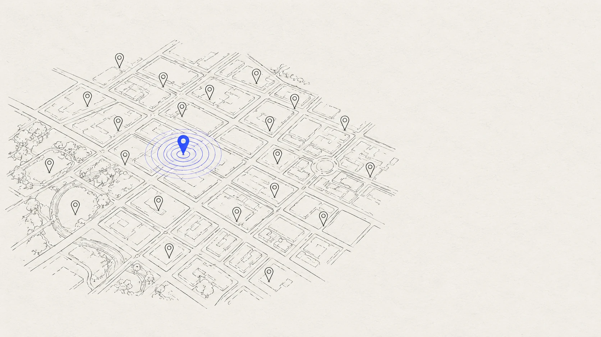
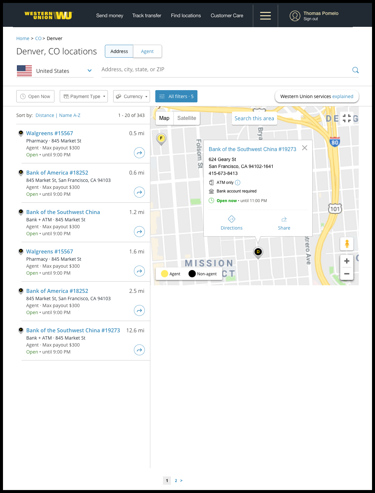
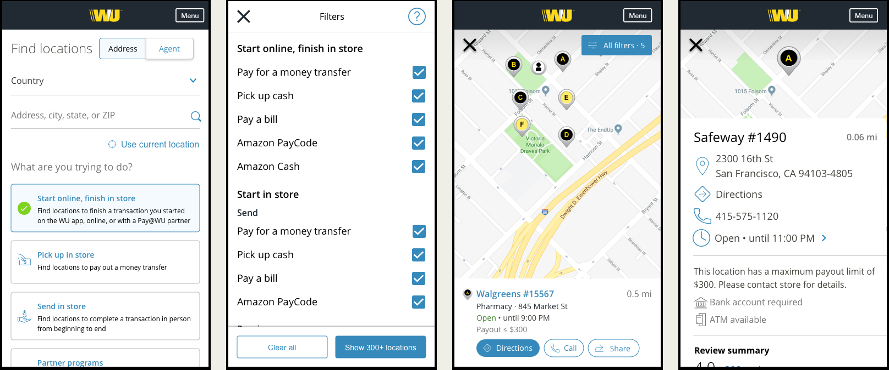

Finding money in a city you just landed in: redesigning the agent locator

For millions of people, a Western Union agent is where money physically arrives — rent, remittances, emergencies. The locator existed to answer one question: where can I go, right now, to do the thing I need? It wasn't answering it.
01Outcome
The redesigned locator shipped as a responsive experience across Western Union's retail-network footprint. The structural change — eligibility-first search over pin-first browsing — is the part I'd defend anywhere: it's the same principle I later applied to enterprise flows, where the product's real job is telling people whether something will work before they invest effort in it.
02What research surfaced
Users weren't browsing a map for fun; they arrived with a task and constraints — send cash before 6pm, receive a transfer near a bus route, find a location that handles their specific service. The existing experience made them do the work: scan pins, open entries one by one, discover too late that a location didn't offer the service or was closed. One participant put it plainly: "Looking for locations on this map is giving my eyes a headache. I don't like spending time online."
The insight that reframed the project: the locator is not a map product; it's an eligibility product. The map is just how you show the answer.

03Design decisions
- Search around the task, not the geography. Service type, hours, and capabilities became first-class filters rather than detail-page surprises.
- Results that answer before the tap. Cards carry the disqualifying information — open now, services offered — so users stop opening dead ends.
- Mobile as the primary reality. The person using this is often standing on a street; the mobile flow was designed first, desktop derived from it.

The full working detail
Why each rule exists, and what it costs.
MethodResearch method and problem-area mapping
Interviews and usability sessions against the live experience, synthesized into four problem areas: pin-scanning fatigue, service ambiguity, hours ambiguity, and detail-page overload. Each design decision in the case study maps to one of those four; nothing in the redesign was aesthetic-first.
MethodDesktop and mobile flow structure
Single search architecture with responsive presentation: list-with-map on desktop, list-first with map toggle on mobile. Location detail restructured from a data dump into task order — can I do my thing here, when, and how do I get there. The mobile flow was designed first because the person using it is most often standing on a street with a task, not at a desk browsing.
ConstraintA network of 200+ countries and 40+ languages
The locator served Western Union's global retail footprint — services, payout limits, and capabilities vary by location, market, and regulation, and the interface had to survive translation across dozens of languages. That variability is precisely why eligibility data belonged structured on the result card rather than written in prose: structured facts localize and scale; paragraphs don't.
LessonEligibility-first as a reusable pattern
The reframe — this is not a map product, it's an eligibility product — became a pattern I've applied to enterprise flows ever since: surface the disqualifying information before the user invests effort. Trade-in eligibility, plan qualification, API access tiers — the same shape. Products earn trust by telling people early when something won't work, not by optimizing the path to a dead end.
Shipping under full NDA →
Search the locator as a sender ↗ Simulated product site — built as part of this case study.